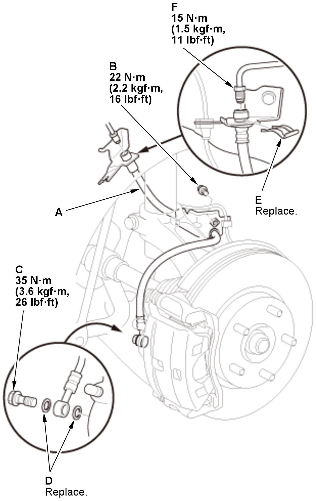
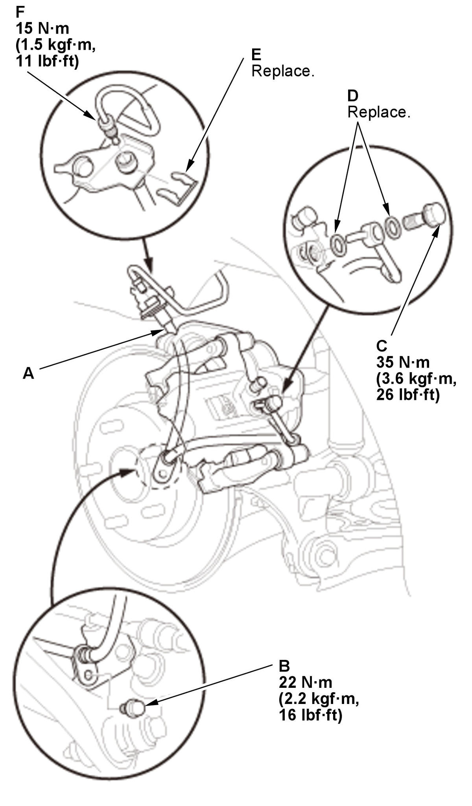

Brake Hose Removal and Installation (Except Type-R): Installation
NOTE: Review the Service Precautions before doing repairs or service .
Front
- Brake Hose - Install

Courtesy of HONDA, U.S.A., INC.1. Install the brake hose (A) with the brake hose mounting bolt (B). 2. Connect the brake hose to the caliper body with the banjo bolt (C) and new sealing washers (D).
3. Install the new brake hose clip (E) to the brake hose.
4. Connect the brake line (F) to the brake hose.
- Brake System - Bleed
- Brake Hose and Line - Check
- Front Wheels - Install
Rear
- Brake Hose - Install

Courtesy of HONDA, U.S.A., INC.1. Install the brake hose (A) with the brake hose mounting bolt (B). 2. Connect the brake hose to the caliper body with the banjo bolt (C) and new sealing washers (D).
3. Install the new brake hose clip (E) to the brake hose.
4. Connect the brake line (F) to the brake hose.
- Brake System - Bleed
- Brake Hose and Line - Check
- Rear Wheel - Install